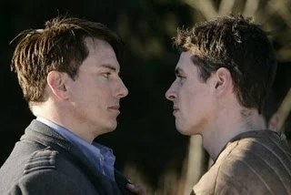

Эра Десятого Доктора
<<< НАЗАД ||| 13. Сквозные ранения ||| ДАЛЬШЕ >>>
или
ДАЛЬШЕ >>> к сериалу "Доктор Кто"
MVO [Sony Sci-Fi], MVO [ТВ-3], MVO [BMWmaximus]
+ Original [ENG]
Субтитры: Русские и Английские
 | Весь 2-й сезон (13 серий) |
Exit Wounds
Дата выхода: 4 апреля 2008
Формат: 50-минутный эпизод
| Варианты озвучек: | * Разные: смотрите по инструкции |
|---|---|
| Скачивание и просмотр: |
Капитан Джон Харт вернулся - он желает отомстить Торчвуду и берёт Джека в плен. Кардифф поражает волна разрушительных взрывов, в то время как воссоединение Джека с потерянным братом оказывается не совсем приятным. Сможет ли команда довериться Джону Харту, чтобы спасти Торчвуд и весь город?

